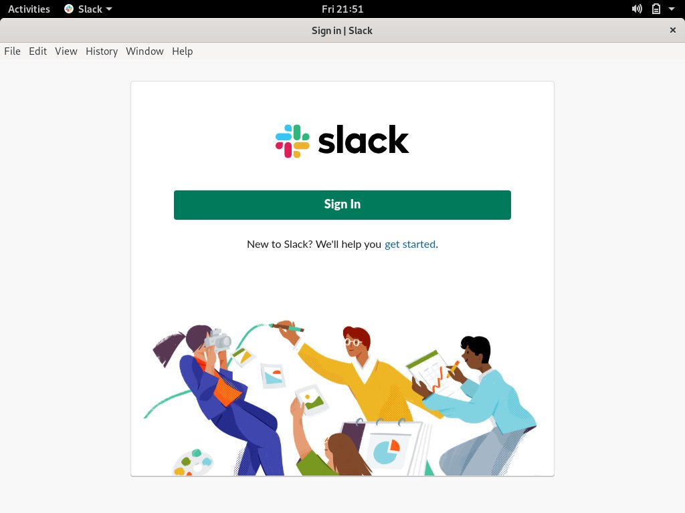

如何在 Debian 10 Linux 上安装 Slack
•
约 500 字
, 预计阅读时间 3 分钟
Slack 是世界上最受欢迎的协作平台之一，可将您的所有通信整合在一起。 Slack 中的对话按频道进行组织。您可以为团队，项目，主题或任何其他目的创建频道，以保持信息和对话的井井有条。您可以搜索频道或消息中发布的所有内容。 Slack 还使您可以通过音频或视频通话与同事交谈，并共享文档，图像，视频和其他文件。
在本教程中，我们将向您展示如何在 Debian 10 ， Buster 上安装 Slack 。
在 Debian 上安装 Slack
Slack 不是开放源代码应用程序，它也不包含在标准 Debian 存储库中。
请按照以下步骤在您的 Debian 10 系统上安装 Slack 。
1.下载松弛
在浏览器中打开 Slack 的 Linux 版本下载页面，然后下载最新的 Slack .deb 软件包。
如果您更喜欢命令行，请使用以下 wget 命令下载软件包：
wget https://downloads.slack-edge.com/linux_releases/slack-desktop-4.0.2-amd64.deb
2.安装 Slack
下载文件后，以具有 sudo 特权的用户身份运行以下命令来安装 Slack ：
sudo apt install ./slack-desktop-*.deb
出现提示时，输入您的用户密码，安装将开始。
3.开始使用
现在您已经在 Debian 桌面上安装了 Slack ，您可以从命令行通过键入 slack 或单击 Slack 图标 (Activities → Slack) 来启动它。
首次启动 Slack 时，将出现如下所示的窗口：

在这里，您可以登录到已经是其成员的工作区，或创建一个新的工作区，然后开始与您的朋友和同事进行协作。
结论
在本教程中，您学习了如何在 Debian 10 桌面上安装 Slack 。有关如何使用 Slack 的更多信息，请访问 Slack 文档页面。